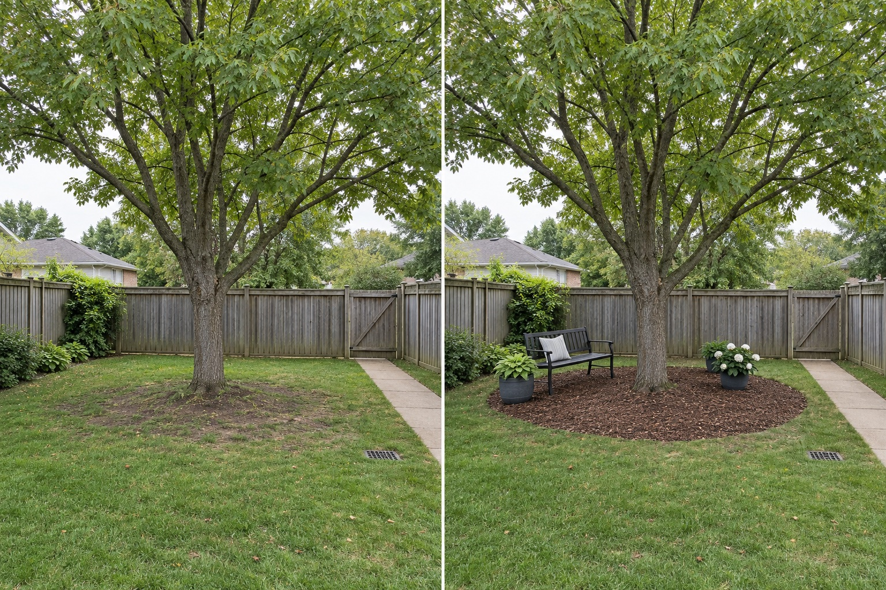

Keep the trunk base visible
Do not hide the transition between trunk and ground behind raised edging, piled material, built-in seating or dense decoration.
Start by treating the existing tree, its trunk base and its unseen root system as protected unknowns. Keep access open and test only movable seating or containers until a qualified arborist has assessed the tree and defined where any digging, grade change, paving or construction may occur.
Editorially reviewed September 9, 2026.
This AI-generated comparison is visual inspiration, not a tree-health assessment, root-zone survey, risk inspection, planting prescription, construction detail, clearance measurement or guarantee.

Do not hide the transition between trunk and ground behind raised edging, piled material, built-in seating or dense decoration.
Use a lightweight bench to test comfort, shade and circulation without treating its pictured position as a verified footing or permanent installation.
Retain the existing gate path and drain access so maintenance does not force repeated traffic across the area around the tree.
TreesAreGood guidance from the International Society of Arboriculture explains that grading, trenching, paving, altered drainage and adding or removing soil can damage roots, and that an arborist should define a tree-protection zone. University of Minnesota Extension notes that mature tree roots radiate through the soil and may extend until barriers restrict them. These sources support a precautionary layout process; they do not define this tree’s roots, health or safety.
The full mature tree, trunk position, visible root flare, lawn, timber boundaries, rear gate, concrete path, surface drain, grade, neighboring context and camera position remain unchanged. The image does not prune the crown, move the trunk, cover the drain or claim that the tree has been inspected.
Photograph the trunk base, crown, nearby surfaces, utilities and drainage from several angles and seasons. Do not diagnose defects from a single view.
Note mowing, bins, gate use, play, deliveries and maintenance so the future route does not concentrate avoidable traffic around the tree.
Test lightweight furniture first. Treat edging, paving, footings, excavation, irrigation and level changes as a separate professional decision.
Check shade, moisture, root competition, mature size, toxicity, invasiveness and maintenance with appropriate local sources before selecting plants.
Avoid paving to the trunk, raising soil against the base, cutting surface roots to fit edging, attaching lights or furniture to the tree, concentrating heavy traffic below the crown, or assuming visible vigor proves structural safety.
Stop before digging, trenching, compacting, grading, paving, adding fill, changing drainage, pruning major limbs or fixing anything to the tree. Seek a qualified arborist when tree condition, roots, construction access, utilities, storm damage or structural risk may affect the decision.
Do not decide from an image. Paving, excavation, compaction, altered drainage and grade changes can affect roots; have the tree and proposed work assessed before designing a permanent surface.
It cannot be established from this photograph or a generic circle. Root spread and the critical protection area depend on the actual tree, site, barriers and condition; a qualified arborist should define the relevant zone.
A lightweight movable bench can test shade and circulation, but check falling-branch risk, ground conditions and tree health before treating any position as safe or permanent.
That depends on local climate, light, moisture, soil, root competition and the exact species involved. Use authoritative local guidance and avoid damaging roots during planting.
Upload a level, wide photo to compare movable concepts while keeping the actual tree, trunk base, access and drainage visible.
AI-generated visualizations are concepts. Verify tree condition, roots, access, drainage, utilities, planting and professional requirements before physical work.